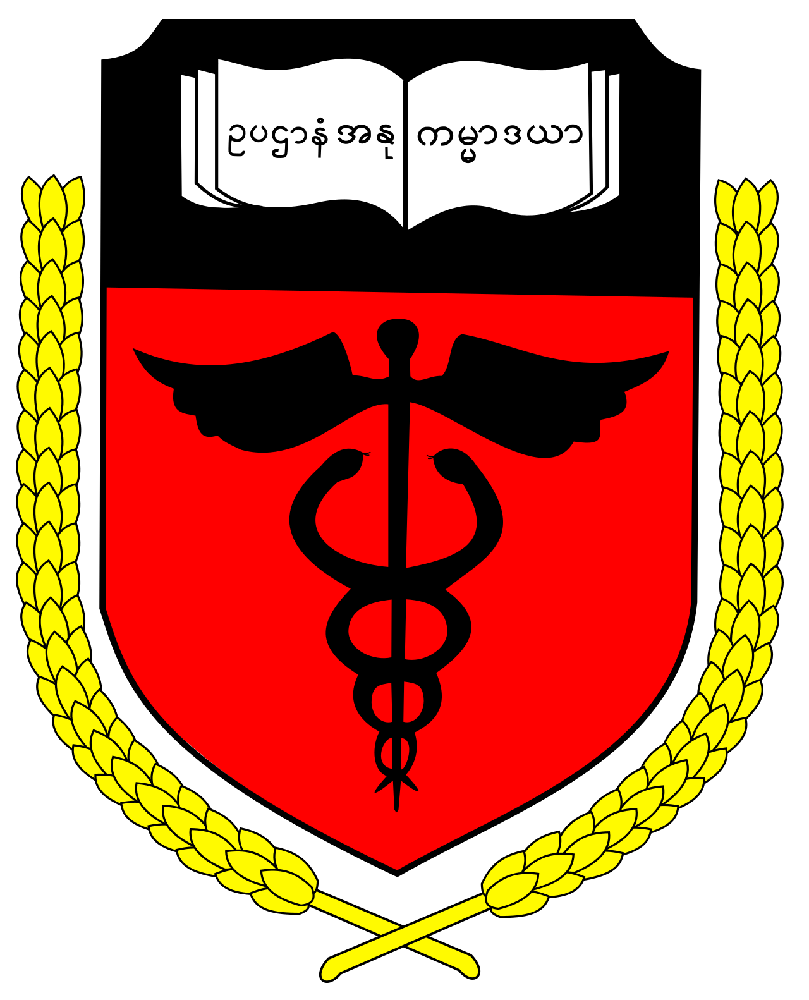

University of Medicine 2
Yangon, Myanmar
Excellence in Medical Education

About the University
University of Medicine 2, Yangon is one of Myanmar's leading public medical universities located in Yangon The university is committed to producing skilled, ethical, and competent medical professionals to serve the healthcare needs of Myanmar.
Address
Khaymar Thi Road
near Okkar Bus Stop
Sa Lein Ward
North Okkalapa Township
Yangon, Myanmar.
Courses
- MBBS
- M.Med.Sc
- Master Degree
- Doctorate (Ph.D)
Admission Requirements
- Passed Matriculation Examination
- Excellent Biology
- Excellent Chemistry
- Meet Annual Cut-off Marks
Facilities
- Teaching Hospital
- Modern Laboratories
- Medical Library
- Research Center
- Computer Laboratory
- Student Hostel
Entrance Marks
(English+Chemistry+Bio)
Lowest Male-251
Lowest Female-258
(Changes Every Year)
Campus Gallery


Contact Information
01-9699589
rector@um2ygn.edu.mm
Visit Official Website